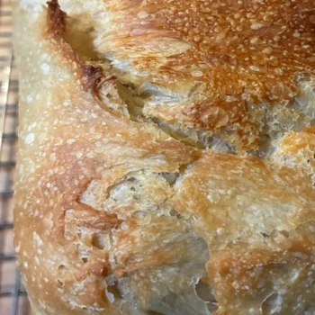

Why Sourdough?

Hello
Good !
Welcome to my information site about my product: 3-Day Sourdough. This page focuses on what led me to add the 3-Day Sourdough to my available products. If you would like to know more about my home business please visit my other site: Caring Kitchen.
Starting the Starter
I started my bread business in October of 2021. Many of my clients asked if I would make some sourdough. I researched sourdough for many months and, in April of 2022, I made my sourdough starter following the instructions at kingarthurbaking.com. I experimented with multiple recipes and settled on 3 different sourdough products: Sesame Hamburger Buns, Sourwhite, and a Baguette (all of which were hybrid sourdough/traditional yeast recipes.) I did not have the room in my refrigerator to long-ferment multiple loaves. In April 2025, the three year anniversary of my starter, I purchased a small refrigerator that made it possible for me to make four 3-Day Sourdough loaves at once. I launched the product, and it eclipsed my Mixed Wheat loaf as my most popular bread.
Discard or Active?
Sourdough starter has to be fed at least once a week, when refrigerated. About half of it needs to be taken out (discarded) and replaced (fed). The portion that is discarded either has to be thrown out or used in a recipe.
Many recipes that use sourdough call for discard. Discard recipes usually use the starter for the signature flavor, but they do not use the starter for raising or fermenting (Like these brownies.) Some discard recipes call for discard but feed and ferment as part of the recipe. (Like these pancakes.)
Most recipes that are using the sourdough as leaven call for active (or hydrated) starter. When I need active starter, I use discard from my original starter in a new jar and feed both the original starter and the discard. When they are both active, I stir down my new active starter and put my original back in the refrigerator. If a recipe calls for 200g of active starter, I use 110g of discard and feed it 55g of water and 55g of flour and feed the original starter with 65g of water and flour. (This makes up for the starter that gets wasted in the jar and on my rubber scraper.)
If you would like to know more, or have suggestions of things I can add to this site, please click the "Want to know more?" button at the bottom of the page.
Benefits of Sourdough
Ask Grok
On August 8, 2025 I asked Grok: What are the health benefits of long-fermented sourdough versus traditional bread?
This is the reply I received:
Long-fermented sourdough bread offers several health benefits compared to traditional bread, primarily due to its fermentation process, which involves wild yeast and lactic acid bacteria. Here's a concise breakdown based on available information:
1. Improved Digestibility:
- Sourdough: Long fermentation (12-48 hours) breaks down gluten and phytic acid, making it easier to digest, especially for those with mild gluten sensitivities (not celiac disease). The process predigests starches, reducing the glycemic load.
- Traditional Bread: Typically uses commercial yeast with shorter rising times (1-3 hours), leaving more intact gluten and phytic acid, which can hinder digestion for some.
2. Better Nutrient Availability:
- Sourdough: Fermentation reduces phytic acid, an "anti-nutrient" that binds minerals like iron, zinc, and magnesium, improving their bioavailability. It also increases folate and other B vitamins.
- Traditional Bread: Higher phytic acid content can limit mineral absorption. Nutrient levels are generally lower unless fortified.
3. Lower Glycemic Index:
- Sourdough: The fermentation process lowers the glycemic index (GI), leading to slower blood sugar spikes. Studies show sourdough can improve glucose metabolism compared to other breads.
- Traditional Bread: Higher GI due to faster starch breakdown, causing quicker blood sugar spikes.
4. Prebiotic and Probiotic Effects:
- Sourdough: Contains prebiotic fibers and potentially some live beneficial bacteria (though most die during baking), supporting gut health.
- Traditional Bread: Lacks significant prebiotic content and has minimal impact on gut microbiota.
5. Reduced FODMAPs:
- Sourdough: Long fermentation reduces FODMAPs (fermentable carbs), which can help people with IBS or similar conditions.
- Traditional Bread: Higher FODMAP content, potentially triggering digestive discomfort in sensitive individuals.
6. Fewer Additives:
- Sourdough: Often made with minimal ingredients (flour, water, salt, starter), especially in artisanal versions, reducing exposure to preservatives or dough conditioners.
- Traditional Bread: Commercial versions may contain additives, emulsifiers, or preservatives, which some people prefer to avoid.
Caveats:
- Benefits depend on fermentation time (longer is better, ideally 24+ hours) and ingredients (whole grain vs. refined flour).
- Sourdough isn't inherently gluten-free and isn't safe for celiac disease.
- Nutritional content varies by recipe and flour type (e.g., whole grain sourdough retains more fiber and nutrients).
Sources: Information aligns with studies and posts found on the web, including discussions on sourdough's impact on gut health, nutrient bioavailability, and glycemic response (e.g., Healthline, BBC Good Food, and X posts from nutrition enthusiasts). For specific claims, like glycemic index or FODMAP reduction, peer-reviewed studies from journals like Food Microbiology were referenced indirectly through web summaries.